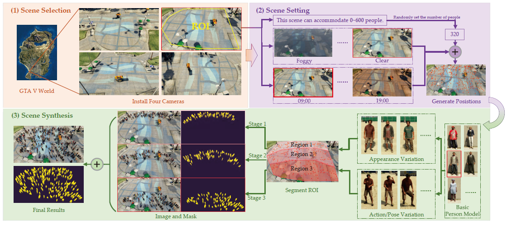
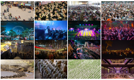
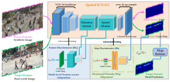
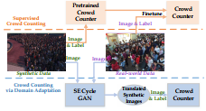
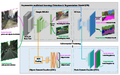
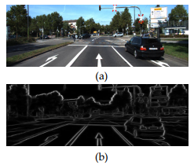
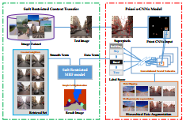
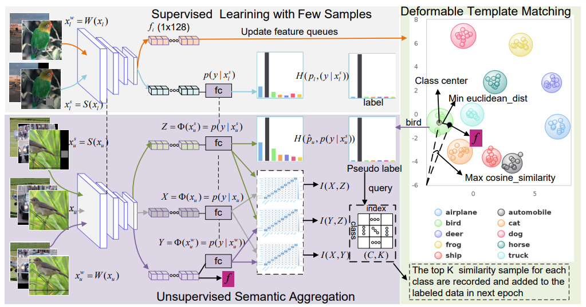
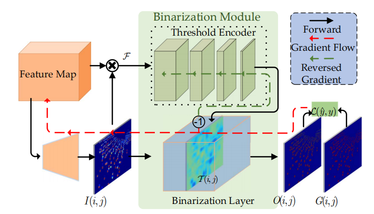
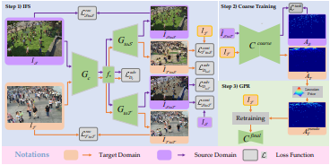

About Me
Northwestern Polytechnical University 2011 - PRESENT
B. Eng. -> M. Phil. -> Ph. D. (expected)
I am currently pursuing the Ph.D degree from Center for Optical Imagery Analysis and Learning, Northwestern Polytechnical University, advised by Qi Wang, Yuan Yuan and Xuelong Li. My research interests are in computer vision, deep learning and machine learning.
Selected Publication (More...)
Crowd Analysis
Crowd Counting, Localization




Semantic Segmentation
Street Scene Labeling, Road Segmentation, Lane Segmentation



Image Classification
Image Classification, Semi-Supervised Learning

ArXiv
Pre-print, Technical Report


Professional Activities
Program Committee Member
- ITSC2018
- ICEEAC2017
- MSEE2016
Regular Reviewer
- CVPR'20, NeurIPS'20, BMVC'19/'20, WACV'21
- IEEE T-ITS, T-CSVT, T-CYB, T-NNLS
- IEEE GRSL
- PR, Neurocomputing
Update: 2020.7 by Junyu Gao